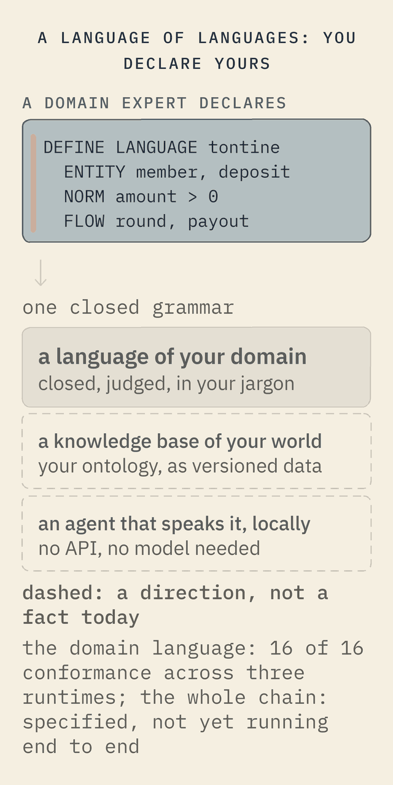

A language of languages
Softanza's founding act, and its own answer to programming in the agentic age, is that declaring a language is as easy as declaring a variable. This is not how software is written today; it is the way Softanza proposes. A domain expert writes, in plain text, the things of their world, the rules between them and the flows that move them. Out of that one declaration come a language in their jargon, a knowledge base of their world, and an agent that speaks it. All of it runs on the device, powered by the platform's own tools: no API, no remote model, no subscription.


What a declaration looks like, from the estate's own machine language. Seventy-nine lines declare the whole language; the meta-court judged it: seven declarations, five forms, zero expressions.
DEFINE LANGUAGE machine AS ( VERSION "0.1", GRAMMAR "0.1", COURT "declarative/machine/fixtures.json", EXTENSION ".machine" ) ... REFUSAL closed_verbs AS ( MESSAGE "The machine verb set is closed (DEFINE)." )
And what a domain expert's world looks like, from the query language's conformance fixtures: a savings circle, declared in its own words.
DEFINE ENTITY deposit (id: uuid, member: text, amount: currency, ...) RATIONALE "One member's contribution to one round of the circle" DEFINE NORM positive_deposit AS ( RULE: amount > 0, MESSAGE: "A deposit must bring something to the circle" )
Three strata per language: a closed syntax, a knowledge-base semantics, a conversational pragmatics; the natural layer compiles to the language's own closed query grammar and never to host code, and it is dictionary-driven, which is why it needs no model. The machine declaration is in the Harobanda repository(opens in a new tab), file declarative/machine/machine.stzu. The language-making discipline's own repository is not public yet; its stage, in its own words: "Phase 1 closed, Phase 1.5 open; blueprint and studies, no code in this repository yet". What runs today runs in the platform: chapter 12 of the course, "Teach a world", and the natural layer shown on the Platform page.
The Softanza way This is not how programming is done today; it is Softanza's proposal for the agentic age: a platform that knows your world, because you declared it, in your language, and the platform judged the declaration.